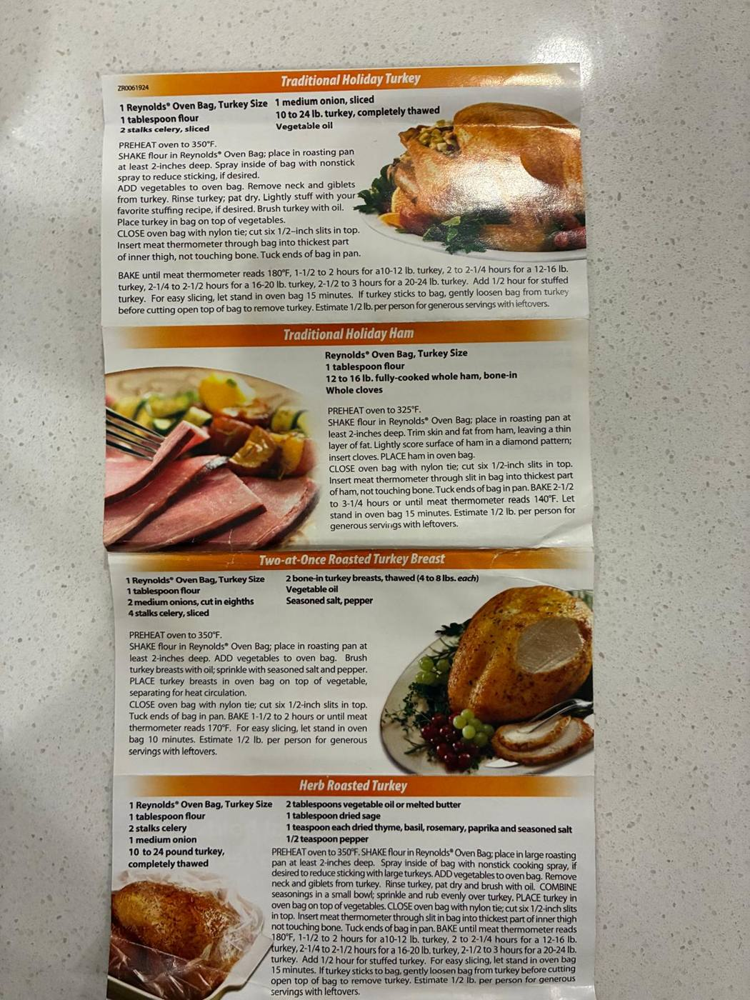

Mains
Traditional Holiday Ham
From Reynolds
Oven325°F
Bake2½–3¼ hours
Done140°F
Allow½ lb per person


Mom's original card (front and back) · tap to enlarge
Ingredients
Method tap a step to mark it done
- Heat the oven to 325°F.
- Shake the flour in the oven bag and place it in a roasting pan at least 2 inches deep.
- Trim the skin and fat from the ham, leaving a thin layer of fat. Lightly score the surface in a diamond pattern and insert the cloves.
- Place the ham in the bag. Close with the nylon tie and cut six ½-inch slits in the top.
- Insert a meat thermometer through the bag into the thickest part of the ham, not touching the bone. Tuck the ends of the bag into the pan.
- Bake 2½–3¼ hours, until the thermometer reads 140°F.
- Let it stand in the bag for 15 minutes before slicing.
Mom’s tips
- Oven-bag chart (on the back): half bone-in ham (8–10 lb) 2–2½ hr; boneless half ham (10–12 lb) 2¼–2¾ hr with ½ cup water; spiral-sliced ham (8–10 lb) 1½–1¾ hr, cut side down — all to 140°F.